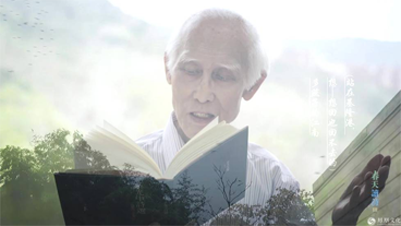
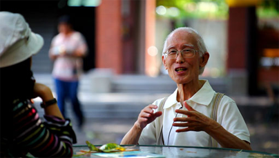

叶匡政：余光中，活在民族的语文中
来源：凤凰评论 作者：叶匡政
台湾著名诗人、文学家余光中，2017年12月14日仙逝。老先生离世已是鲐背之年，走时又无病痛，绝对是喜丧了。余光中生活的这90年，可谓中国最不平静的90年，一直上演着各类战乱人祸、生离死别的悲剧。余光中除童年时，与母亲为躲战乱有过逃亡颠沛的日子，其后所受磨难极少。生于此世，能如此平安地走完一生，确是一种大福报、大圆满了。

余光中一直驰骋文坛，他作品量极丰，在诗歌、散文、评论、翻译领域均有建树。与余光中有过复杂纠葛的陈芳明，对余光中的评价是客观的：“以诗为经，以文为纬，纵横半世纪以上的艺术生产，斐然可观；那已不是属于一位作者的毕生成就，也应属于台湾文坛创造力的重要指标。”
余光中20岁，就在大陆发表过第一部诗集。我最早读余光中的诗，是在四川的《星星诗刊》。1982年，诗人流沙河在那里开过一个专栏，叫“台湾诗人十二家”，前面有介绍和赏析的文章，后面附了诗人的诗作。那时余光中的《乡愁》，在大陆还不像今天这么有名。我13岁，上初二。不用说，台湾诗人的诗让我大开眼界，写诗的胆子也变得大起来。流沙河在文章开篇，就引了余光中的名篇《当我死时》：
当我死时，葬我，在长江与黄河之间
枕我的头颅，白发盖着黑土
在中国，最美最母亲的国度
我便坦然睡去，睡整张大陆
听两侧，安魂曲起自长江，黄河
两管永生的音乐，滔滔，朝东
这是最纵容最宽阔的床
让一颗心满足地睡去，满足地想……
这大概是我读到余光中的第一首诗，好像是为今天写的，如今他已“坦然睡去，睡整张大陆”，可以“听两侧，安魂曲起自长江，黄河/ 两管永生的音乐，滔滔，朝东”。1980年代初，读到这样的诗，我大吃一惊，在我幼小心灵所激起的波澜，并不亚于今天孩子首次看到VR影像。我高中时能写出被编辑视为前卫的诗，与这种阅读经验是分不开的。

如今大陆一说起余光中，说的都是他的诗歌《乡愁》，也多以“乡愁诗人”称呼他，似乎他只写这一首诗。这是他的幸运，也是他的不幸。幸运的是，他有一首诗能让这么多人知道并记住；不幸的是，这种记住使他的文学面孔显得单一，甚至可说是对他的简化和矮化。这种“一首诗主义”自古以来就存在，但如果只到这首诗为止，就认为自已认知了一位诗人，可能会被诗人看作最悲哀的事。
余光中其实是个诗歌风格多变的诗人，他前后写过800多首诗，如他自已所说，是个“多妻主义者”。他早年学英文专业出生，又到美国留过学、教过书，早年诗作深受西方现代诗影响，不过因未走出新月派和五四新诗的基调，他的现代性与1980年代后大陆现代诗的风格，还不大相同。1960年代后，他开始把目光转向中国古典文学，期望自已能对传统有所改造，诗歌完全走出了西化风格，想在古典节奏中有所创造，诗歌显出传统的一面。如他自已所说：“少年时代，笔尖所染，不是希顿克灵的余波，便是泰唔士的河水。所酿也无非一八四二年的葡萄酒。到了中年，忧患伤心，感慨始深，那支笔才懂得伸回去，伸向那块大陆，去沾泪罗的悲涛，易水的寒波，去歌楚臣，哀汉将，跟古代最敏感的心灵，陈子昂在幽州台上，抬一抬杠。”其后，他受美国摇滚乐启发，开始注重从民歌中汲取营养，开始追求诗的音乐性和可诵性，常有诗歌如歌词般简洁、适于吟诵，《乡愁》一诗就是那时的产物。
不过，余光中无论歌咏乡愁亲情，还是吟诵汉魂唐魄，或是悲叹现实沦落，他骨子里还是一个中国古典文人的情怀。在他那一代诗人中，他或许是激烈的，他会哀叹“中国中国你是不治的胃病”“中国中国你令我早衰”“中国啊中国你逼我发狂”，但在1990年代后的大陆现代诗人眼中，他的诗仍偏于传统，这或许是一个诗人难以摆脱的时代性，但从某种程度上看，这也是余光中自觉的追求。如他所言“一位诗人最大的安慰, 是为自己的民族所热爱，且活在民族的语文中。当我死时，只要确信自己能活在中文最美丽、最母亲的中文里, 仅此一念，即可含笑螟目。”从今天他逝去后大陆民众的反应看，他做到了。
在他那一代诗人中，余光中无疑是一个有着清醒的语言意识的诗人。这和他早年的英文学习和翻译经验有关，也和他深厚的古典文学功底有关。这种语言意识，或许当代的很多现代诗人不认同或不喜欢，但不失为一种努力的方向。在余光中看来，“地道的中文”与国人的关系日渐生疏，包括文言文与民间口语。所以他后期的诗作，包括他的散文，都在努力恢复“地道的中文”“原有的那种美德”。在熟悉英语的余光中看来，措词简洁、句式灵活、声调铿锵，就是中文的生态。他的语言，在他人看来可能是保守的，但对余光中来说，那一直是他中文创新的试验。他一直期望中文“缓慢而适度的西化”，“高妙的西化”，认为“太快太强的西化”，会破坏了中文的自然生态。所以，他批评艾青，认为“在新诗人中，论中文的蹩脚，句法的累赘。很少人比得上艾青。”
余光中的这种语言意识和追求，在他的散文中表现尤为明显。他自称“右手为诗，左手为文”，以诗为正宗，文为副产。他的散文写作，也比写诗要晚10年，但散文的成就，似乎要超过诗歌，余光中也认为自已“在散文艺术上的进境，后来居上，竟然超前了诗艺。”在散文中，他的语言意识很清晰，是完全反欧化的，也反对五四时期朱自清们的“白活文纯粹观”，认为以笔就口，口所不出，笔亦不容，是划地为牢，非常注重吸收文言的优点，如对仗匀称，平仄和谐，词藻丰美，句法精练等。他在批评朱自清的散文时，就说过“欧化得来的那一点‘精密’的幻觉，能否补偿随之而来的累赘与繁琐，大有问题；而所谓‘精密’是否真是精密，也尚待讨论”。他认为即便欧化能带来精密，应只限于论述文。
从语言和文体角度看，余光中散文实现了自已的理想。他注重行文的节奏、单调、章法和句法的变化，注重“声色并茂、古今相通、中西交感”，注重吸收“文言的严整简洁，英文的主客井然”，试验语言的“速度、密度和弹性”，文章好读而不刻板，确实做到了“让中国的文字，在变化各殊的句法中交响成一个大乐队”。但这仍然只是语言的追求，散文的境界，却不完全是由语言决定的，作家的生命经验与生存体验的份量，往往也决定了文章的份量。余光中的散文，确实体现了一个中国文人健康、诚垦的情感世界，家庭伦常、故国故人、自然山川在他的文章中都有表现，但因他一生非常顺利，长年在书斋生活，虽然摆脱了他反对的“伪学者散文”的某些毛病，但他的散文在生命体验的厚重度仍略显不够。这或许是一个作家，要为一生顺达所必须付出的代价。

余光中做了一生的教授，但骨子里还是一个诗人。相比起他的诗、文来说，他的评论倒显得更为率性真实。他在1970年代提出要“改写”新文学史，对戴望舒的诗、朱自清的散文、艾青的诗等都有过严肃的批判。他批评朱自清的散文“庸俗而肢浅”“滑稽与矛盾”，在“伤感滥情等方面作出了示范”；认为朱自清的散文“想象不够充沛，所以写景之文近于工笔，欠缺开阅吞吐之势”；“他的句法变化少，有时嫌大俚俗繁琐，且带点欧化。他的譬喻过分明显，形象的取材过分狭隘，至于感性，则仍停闺在农业时代，太软大旧。他的创作岁月，无论写诗或是散文，都很短暂，产量不丰、变化不多。”
他评价戴望舒：“他的产量少，格局小，题材不广，变化不多。他的诗，在深度和知性上，都嫌不足。他在感性上颇下功夫，但是往往迷于细节，耽于情调，未能逼近现实。他兼受古典与西洋的熏陶，却未能充分消化，加以调和。他的语言病于欧化，未能发挥中文的力量。他的诗境，初则流留光景，囿于自己狭隘而感伤的世界，继则面对抗战的现实，未能充分开放自己，把握时代。如果戴望舒不逝于盛年，或许会有较高的成就。这当然只是一厢情愿的假想，因为三十年代的名作家，一九四九年以后，在创作上例皆难以为继，更无论再上层楼。”
大概只有余光中这样真性情的诗人教授，敢如此评价前辈作家了。他也卷入过台湾文坛的一些交锋。1977年，他在《联合报》上发了《狼来了》一文，直到10多年前还在大陆文化界引起过争论。在那篇文章中，他反对的其实是工农兵文学，他认为“所谓‘工农兵文艺’，正是配合阶级斗争的一种，文艺”，并说“目前国内提倡‘工农兵文艺’的人，如果竟然不明白它背后的意义，是为天真无知；如果明白了它背后的意义而竟然公开提倡，就不仅是天真无知了。”这里的意思很明白，我想这些观点在大陆人看来，并没有什么错。不像陈鼓应评论余光中的“颓废意识、色情主义和流亡心态”，大多是对余光中诗歌的曲解或断章取义。这场论战不过是两种“意识形态的对决”，其实与文学见解无关。哪一方更有道理，我想历史已给出了答案。
即便这样，余光中晚年也对此进行了解释和反省：“《狼来了》一篇是坏文章，所以如此，要把它放回历史的背景上去，才能明白。1977年，大陆刚经历‘文革’，喘息未完。在那场浩劫中受害的知识分子难计其数。我于1974年去香港教书，对‘文革’余悸并不陌生。当时我班上的学生，家在广东，常向我亲述‘文革’真相。去港不久，因为我在诗中批评‘文革’，招来‘左报’、‘左刊’的围剿，攻击我的文字当在十万字以上，致我的心情相当‘孤愤’。某报就曾刊过一首长诗，有这么一句：“工人一锤，你的‘白玉苦瓜’就敲得粉碎！”……在‘文革’震骇的压力下，心情沉重，对一般左倾言论都很敏感。对茫茫九州乡思愈深，而对现实的恐惧愈强，其间的矛盾可见于我的诗句“患了梅毒依旧是母亲”。海外的“左派”读到此句，只见“梅毒”而不见“母亲”，常斥为“反华”。这就是当年我在香港写《狼》文的心情，但是不能因此就说，那篇文章应该那样写。当时情绪失控，不但措辞粗糙，而且语气凌厉，不像一个自由主义作家应有的修养。政治上的比附影射也引申过当，令人反感，也难怪授人以柄，怀疑是呼应国民党的什么整肃运动。”
事实上，此文并未让乡土作家们遭受什么厄运，却一直被上纲上线，有点让人无法理解。余光中文中的观点，比起他被指责的“崇洋媚外”“色情主义”“颓废意识”“恶劣可鄙的嘴脸和陋习”，要温和敦厚多了。据陈映真自已说，余光中后来在私信中曾对他说过：“对您造成很大的伤害，对您说对不起。”“请接受我最大的歉意、善意、诚意……”倒是陈映真一方的咄咄逼人、不依不饶让人无法理解。
说起这些往事，一是想让认为余光中只是个乡愁诗人的读者，了解他的率真与丰富性；二是因为听说时至今日，年轻一辈的台湾诗人还有人因此事件，在论及余光中时仍“有点令我们不知如何是好”。因一篇《狼来了》，“不可以喜欢余光中的诗”，对台湾诗人来说，似乎成了“一个‘政治正确’的必然选择。”余光中的诗，确实多的是“国族之爱和乡愁之美”，少了一些诗人需有的“叛逆和逃逸”及“反思”的乐趣，这其实和他对大陆的政治判断有关，也和他中国文人的情怀有关，据此说他与权力有纠葛，显然有失偏颇。
余光中先生曾告白：“我俯仰一生，竟然以诗为文，以文为论，以论佐译，简直有点‘文体乱伦’。不过，仓颉也好，刘勰也好，大概都不会怪罪我吧。写来写去，文体纵有变化，有一样东西是不变的，那便是我对中文的赤忱热爱。如果中华文化是一个大圆，宏美的中文正是其半径，但愿我能将它伸展得更长。”
这是先生的真心话。